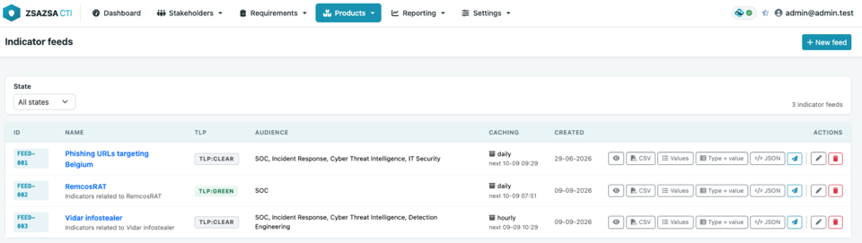
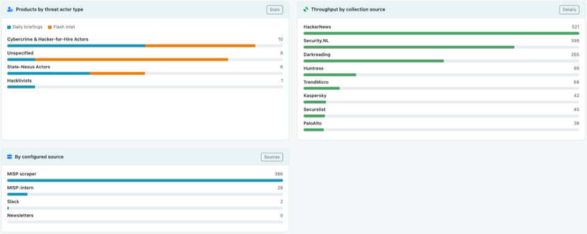
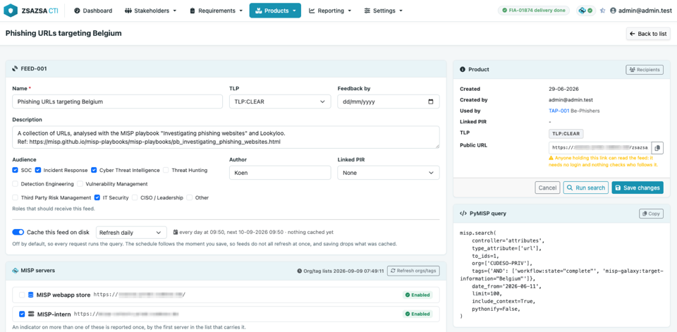
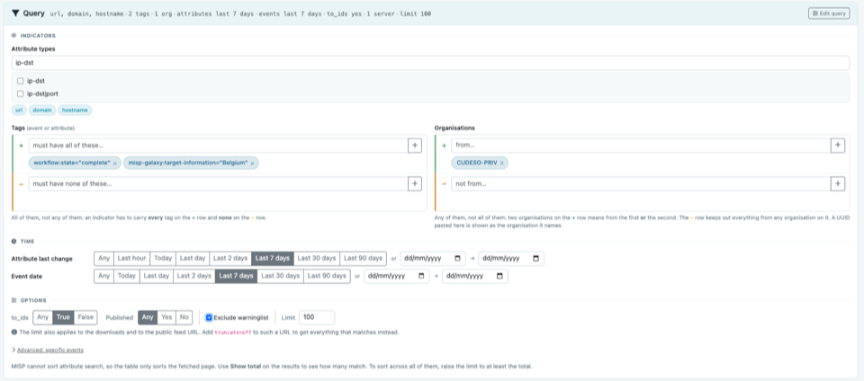
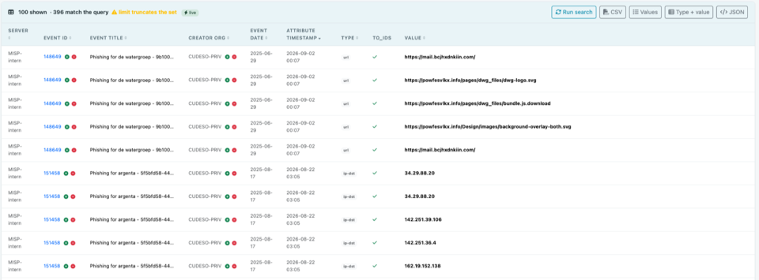
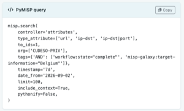
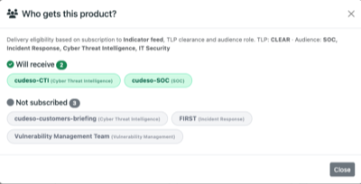
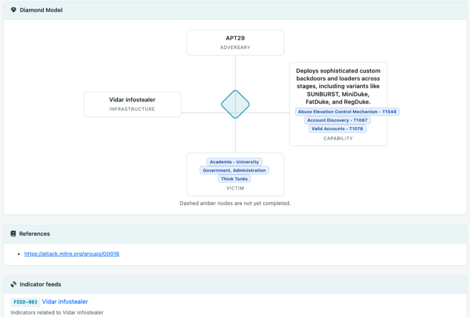

Managing recurring indicator feeds for your SOC and CSIRT
zsazsa supports day-to-day CTI work: stakeholder management, handling PIRs, GIRs and RFIs, data collection, and building threat intelligence products. This post looks at one of those products, the indicator feed.

An indicator feed is a list of technical indicators you hand over on a regular basis: IP addresses, domains, URLs, file hashes. Your SOC loads it into a SIEM, a firewall or a proxy blocks on it, and a threat hunter uses it to search back through last month's logs. A CSIRT relies on the same list to spot malicious activity faster and to enrich an incident.
Most teams end up building these lists with scripts. Someone pulls IP addresses out of MISP for the firewall, someone else writes a domain list for the DNS sinkhole, another builds a CSV for the SIEM, and one script was thrown together for a single incident last year and is still running every night. They usually rely on PyMISP, they all do more or less the same thing, and hardly any of them are documented. This post is about moving away from that: from herding scripts to managing feeds in one place.
Where the indicators come from
Indicators come from your data collection sources. In MISP that means what you receive from the communities you're connected to, what your own analysts create by hand, and what zsazsa pulls in from newsletters, articles and reports.

Each type of source is there for a different reason. Open source communities give you broad coverage: lots of organisations sharing what they see means you pick up things you'd never spot on your own. Commercial feeds cost money, but in return you usually get more curated indicators. Government and sector sources, a national CSIRT or an ISAC for example, can provide authoritative guidance and a regulator can require you to act on what they send you.
Indicators are also produced inside your own organisation. The CSIRT works on an incident and the indicators from it should reach the SOC the same day. Detection engineering needs them to write a rule. Threat hunting needs them to look back over the past weeks. An indicator feed is how you pass that on without mailing a spreadsheet around.
Not every feed has to be broad. Some of the most useful ones are narrow: the infrastructure of one threat actor, or the addresses seen during one ongoing investigation.
Filter before you hand it over
A feed is read by machines more than by people, and a raw list carries duplicates, old entries and values that only produce false positives. The MISP project maintains warninglists for that reason: cloud provider ranges, public resolvers and other values that might look interesting but aren't. On top of that, some curation is usually needed: strip out indicators you can't act on, entries you have no detection capability for, and remove infrastructure that's probably already been cleaned up. After all, an unfiltered feed creates alert fatigue, and alert fatigue is how an initially good feed ends up switched off.
Why this gets messy in practice
Every consumer wants a different output format. The firewall wants one value per line, the SIEM wants CSV with context, a colleague wants JSON. So you write a script per consumer. Then the requirements start moving. Exclude this organisation, their indicators are too noisy. Only indicators with to_ids set. Only the last seven days. Not that event, it was a test. Every change is an edit in a script, and after a year nobody remembers which script feeds which system.
The queries themselves are usually fine. What is missing is everything around them: no overview, no owner, and no way for a colleague to see what a feed contains without reading the code.
In zsazsa, a feed is a product
zsazsa treats an indicator feed as an intelligence product, the same way it treats a daily briefing or a vulnerability advisory. It has an id, a name, a TLP, an audience, an author and a feedback date. It sits in the product list next to the others and has a page of its own.

Because it is a product, it can also be sent to stakeholders through their regular notification channels.
Building the query
A feed starts as a search over MISP attributes, and the query card splits it in three parts.

- Indicators. Pick the attribute types you want, for example
ip-dst,domainandurl, then narrow it down with tags and organisations. Both work as include and exclude lists, so you can ask for everything tagged with a malware family while leaving out the two organisations you do not trust for blocking. Tags are matched on the event and on the attribute. - Time. Feeds age. You can limit on the attribute's last change, either with a quick choice of the last hour, day, week or month, or with an exact date range. The event date is restricted separately. Most operational feeds only want recent material.
- Options. Restrict to
to_idsattributes when the feed is for a blocking device. Ask for published events only if you want reviewed (curated) material, enable the warninglist filter to rule out likely false positives, and set the limit (which is also the size of the export) to avoid overloading MISP.
Every row in the result table has a plus and a minus button, so when you spot a noisy event or organisation in the preview, it only takes one click to add it to the exclude list. This is how a feed gets tuned: run it, look at what comes back, exclude what you do not want, run it again.

The page shows the matching PyMISP call while you work and updates it as you change the filters, so you can see what the feed really asks MISP.

Handing the feed over
A feed comes in four different output formats.
- Values is one unique value per line, which is what a blocklist wants.
- Type + value is the same list with the type in front, separated by a tab, so a script does not have to guess whether something is a domain or a hash.
- CSV has one row per matching attribute with the event, the organisation and the server it came from.
- JSON carries the feed itself, its TLP, the moment the query ran and every indicator with its tags and event.
Every feed also gets its own URL. Point a tool at it and it can pull the list directly. Add ?format=csv or ?format=json for another output format, and ?truncate=off when a consumer wants everything that matches instead of the number the limit allows. Note that anyone holding that link can read the feed, so treat it like a password (access with an API key, and access control for this type of product, are on the roadmap). A feed can also go out via the normal product route, to your stakeholders through their notification channels. That suits recipients who do not run a tool that polls a URL, and people who just want a heads-up via email or via a chat channel such as Mattermost.

Caching, so MISP is left alone
A blocklist pulled every five minutes by four devices is a lot of queries for a list that changes once a day. Enable caching and pick hourly, daily or weekly.
The first request runs the query once and writes all four formats to disk. The analyser run refreshes the feeds that are due, so your consumers normally read a file. The schedule follows the moment you saved the feed. Save at 14:16 and it refreshes at :16 past every hour, or at 14:16 every day, so feeds do not all come due at the same time.
Failures stay visible. If a refresh cannot reach MISP, the feed keeps serving the copy it has and says so on its page and in the list. It does not hand out an empty file.
Feeds that belong to something
A feed is more useful when it belongs to something else in zsazsa.
Link it to a threat actor profile, for example to fill the Infrastructure corner of the Diamond Model, and the indicators travel inside that product. When the profile goes out the feed is run again and its indicators are included, so the reader does not need access to your MISP. The feed page lists the profiles that use it, so you can see what depends on a feed before changing it (note that campaign profiles are planned and will work the same way).

Link it to a PIR and the feed is tied to the intelligence requirement it serves. That is what makes it reviewable: in six months you can ask whether it still answers the question it was created for, and the feedback date reminds you to.
What you end up with
Instead of a folder of scripts you have a list of feeds. Each has a name, an owner, a TLP, a query you can read on screen, an audience and a URL. A colleague can open it and understand it without reading Python.
In practice, this means you edit a feed in a form instead of changing a script and deploying it. The feed list shows which feeds exist, who owns them, who receives them and when they last refreshed. The feed page keeps the query, TLP, recipients and refresh history together, so you can check how it is configured and investigate a problem without finding several scripts and cron entries first.
It is the same MISP underneath. zsazsa does not store the indicators and does not become a second source of truth. It saves the question, runs it on a schedule, and puts the answer where your tools and your stakeholders can reach it.